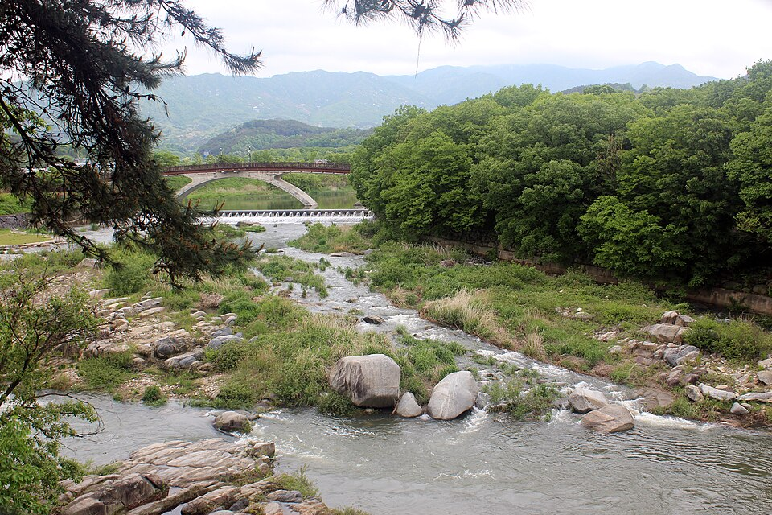

함양 검정고시 — 수학이 막힐 때 과학부터 손대는 이유

검정고시 준비를 시작하면 대부분 수학에서 한 번은 멈춥니다. 그리고 수학이 안 풀리니까 오늘은 아무것도 못 했다로 하루가 끝납니다. 이 상태가 몇 주 이어지면 다른 과목까지 같이 늦어집니다. 함양 검정고시를 준비하면서 수학·과학 때문에 막혀 있는 분들께 드리는 안내입니다.
수학이 막히는 자리는 대개 그 단원이 아닙니다
지금 풀고 있는 단원이 안 되는 것처럼 보여도, 실제로 걸리는 건 그보다 훨씬 앞에 있는 내용인 경우가 많습니다. 분수 계산, 이항, 괄호 풀기 같은 것들입니다. 이 부분이 비어 있으면 어떤 단원을 펴도 같은 자리에서 막힙니다.
그래서 수학은 막힌 단원을 붙잡고 반복하는 대신 한 단계 뒤로 내려가 확인하는 편이 빠릅니다. 되돌아가는 게 손해처럼 느껴지지만, 비어 있는 곳을 메우고 나면 그 뒤 단원들이 한꺼번에 풀립니다. 검정고시 수학은 깊이보다 기본 계산이 흔들리지 않는지를 주로 묻습니다.
수학이 정체될 때 과학을 같은 주에 넣습니다
수학은 되돌아가 메우는 구간에서 눈에 보이는 진도가 한동안 안 나옵니다. 이때 수학만 붙잡고 있으면 "해도 그대로"라는 느낌 때문에 그만두게 됩니다. 그래서 같은 주에 진도가 눈에 보이는 과목을 하나 같이 넣습니다. 과학이 여기에 잘 맞습니다.
과학은 단원끼리 연결이 느슨한 편이라 앞을 몰라도 뒤를 볼 수 있습니다. 물질·생명·지구처럼 성격이 다른 영역이 나뉘어 있어서, 어려운 데서 막히면 다른 영역으로 넘어가 진도를 낼 수 있습니다. 수학이 정체된 주에도 "오늘 뭔가 했다"는 감각이 남는 것이 생각보다 큽니다.
과학은 계산이 아니라 용어에서 갈립니다
과학을 어려워하는 분들 이야기를 들어 보면 계산 때문인 경우는 많지 않습니다. 대부분 지문에 나오는 단어의 뜻을 몰라서 문제가 안 읽힙니다. 용어만 정리되면 답이 지문 안에 보이는 문제도 꽤 있습니다.
그래서 과학은 문제부터 풀지 말고 단원마다 핵심 용어를 먼저 훑고 들어갑니다. 정의를 통째로 외울 필요는 없고, 한 줄로 설명할 수 있으면 충분합니다. 이 방식이 사회·한국사에도 그대로 쓰여서, 한 번 익혀 두면 여러 과목에서 같이 덕을 봅니다.
두 과목을 어떻게 배치하나
구체적으로는 수학은 짧게 매일, 과학은 몰아서 주 2~3회가 무난합니다. 수학은 하루 건너뛰면 감이 빨리 떨어지는 과목이라 분량이 적어도 매일 손을 대는 게 낫고, 과학은 한 번에 한 단원을 정리하는 쪽이 효율적이기 때문입니다.
다만 이 배치는 지금 어느 과목이 얼마나 비어 있느냐에 따라 달라집니다. 수학이 거의 바닥이라면 초반 몇 주는 수학 비중을 크게 잡고, 과학은 용어 정리만 얹는 식으로 시작하기도 합니다.
함양에서 이렇게 함께합니다
저희는 1:1 맞춤 과외라 "어디서 막혔는지"를 찾는 데 시간을 씁니다. 같은 문제를 계속 틀리는 이유가 단원 때문인지 앞의 계산 때문인지 옆에서 보면 금방 드러납니다. 함양군과 인근 지역은 방문 수업이 가능하고, 학원가까지 거리가 있어 이동이 부담되면 화상(줌) 수업으로 집에서 그대로 진행합니다. 수학처럼 풀이 과정을 봐야 하는 과목도 화면을 같이 보며 짚어 드립니다.